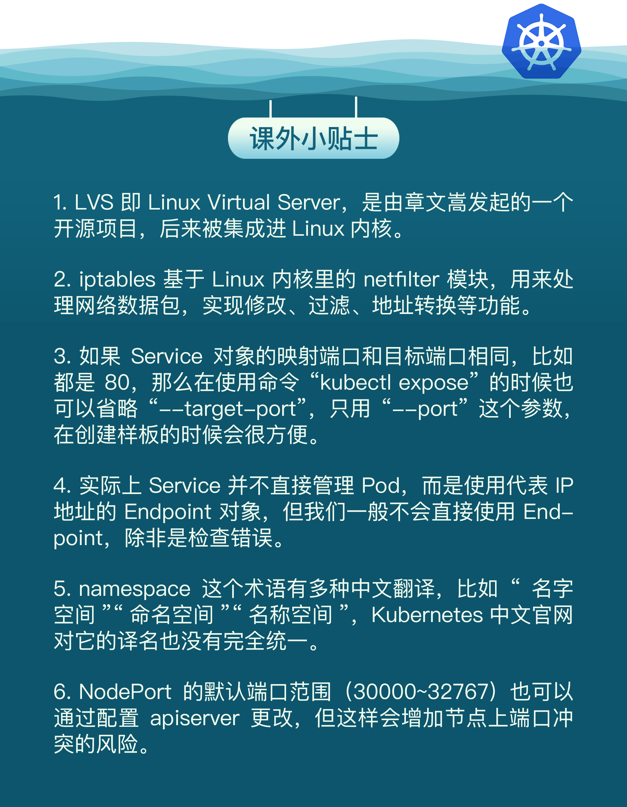

- 00 开篇词 迎难而上，做云原生时代的弄潮儿.md.html
- 00 课前准备 动手实践才是最好的学习方式.md.html
- 01 初识容器：万事开头难.md.html
- 02 被隔离的进程：一起来看看容器的本质.md.html
- 03 容器化的应用：会了这些你就是Docker高手.md.html
- 04 创建容器镜像：如何编写正确、高效的Dockerfile.md.html
- 05 镜像仓库：该怎样用好Docker Hub这个宝藏.md.html
- 06 打破次元壁：容器该如何与外界互联互通.md.html
- 07 实战演练：玩转Docker.md.html
- 08 视频：入门篇实操总结.md.html
- 09 走近云原生：如何在本机搭建小巧完备的Kubernetes环境.md.html
- 10 自动化的运维管理：探究Kubernetes工作机制的奥秘.md.html
- 11 YAML：Kubernetes世界里的通用语.md.html
- 12 Pod：如何理解这个Kubernetes里最核心的概念？.md.html
- 13 Job_CronJob：为什么不直接用Pod来处理业务？.md.html
- 14 ConfigMap_Secret：怎样配置、定制我的应用.md.html
- 15 实战演练：玩转Kubernetes（1）.md.html
- 16 视频：初级篇实操总结.md.html
- 17 更真实的云原生：实际搭建多节点的Kubernetes集群.md.html
- 18 Deployment：让应用永不宕机.md.html
- 19 Daemonset：忠实可靠的看门狗.md.html
- 20 Service：微服务架构的应对之道.md.html
- 21 Ingress：集群进出流量的总管.md.html
- 22 实战演练：玩转Kubernetes（2）.md.html
- 23 视频：中级篇实操总结.md.html
- 24 PersistentVolume：怎么解决数据持久化的难题？.md.html
- 25 PersistentVolume + NFS：怎么使用网络共享存储？.md.html
- 26 StatefulSet：怎么管理有状态的应用？.md.html
- 27 滚动更新：如何做到平滑的应用升级降级？.md.html
- 28 应用保障：如何让Pod运行得更健康？.md.html
- 29 集群管理：如何用名字空间分隔系统资源？.md.html
- 30 系统监控：如何使用Metrics Server和Prometheus？.md.html
- 31 网络通信：CNI是怎么回事？又是怎么工作的？.md.html
- 32 实战演练：玩转Kubernetes（3）.md.html
- 33 视频：高级篇实操总结.md.html
- 加餐 docker-compose：单机环境下的容器编排工具.md.html
- 加餐 谈谈Kong Ingress Controller.md.html
- 结束语 是终点，更是起点.md.html
- 捐赠
20 Service：微服务架构的应对之道
你好，我是Chrono。
在前面的课里我们学习了Deployment和DaemonSet这两个API对象，它们都是在线业务，只是以不同的策略部署应用，Deployment创建任意多个实例，Daemon为每个节点创建一个实例。
这两个API对象可以部署多种形式的应用，而在云原生时代，微服务无疑是应用的主流形态。为了更好地支持微服务以及服务网格这样的应用架构，Kubernetes又专门定义了一个新的对象：Service，它是集群内部的负载均衡机制，用来解决服务发现的关键问题。
今天我们就来看看什么是Service、如何使用YAML来定义Service，以及如何在Kubernetes里用好Service。
为什么要有Service
有了Deployment和DaemonSet，我们在集群里发布应用程序的工作轻松了很多。借助Kubernetes强大的自动化运维能力，我们可以把应用的更新上线频率由以前的月、周级别提升到天、小时级别，让服务质量更上一层楼。
不过，在应用程序快速版本迭代的同时，另一个问题也逐渐显现出来了，就是“服务发现”。
在Kubernetes集群里Pod的生命周期是比较“短暂”的，虽然Deployment和DaemonSet可以维持Pod总体数量的稳定，但在运行过程中，难免会有Pod销毁又重建，这就会导致Pod集合处于动态的变化之中。
这种“动态稳定”对于现在流行的微服务架构来说是非常致命的，试想一下，后台Pod的IP地址老是变来变去，客户端该怎么访问呢？如果不处理好这个问题，Deployment和DaemonSet把Pod管理得再完善也是没有价值的。
其实，这个问题也并不是什么难事，业内早就有解决方案来针对这样“不稳定”的后端服务，那就是“负载均衡”，典型的应用有LVS、Nginx等等。它们在前端与后端之间加入了一个“中间层”，屏蔽后端的变化，为前端提供一个稳定的服务。
但LVS、Nginx毕竟不是云原生技术，所以Kubernetes就按照这个思路，定义了新的API对象：Service。
所以估计你也能想到，Service的工作原理和LVS、Nginx差不多，Kubernetes会给它分配一个静态IP地址，然后它再去自动管理、维护后面动态变化的Pod集合，当客户端访问Service，它就根据某种策略，把流量转发给后面的某个Pod。
下面的这张图来自Kubernetes官网文档，比较清楚地展示了Service的工作原理：
你可以看到，这里Service使用了iptables技术，每个节点上的kube-proxy组件自动维护iptables规则，客户不再关心Pod的具体地址，只要访问Service的固定IP地址，Service就会根据iptables规则转发请求给它管理的多个Pod，是典型的负载均衡架构。
不过Service并不是只能使用iptables来实现负载均衡，它还有另外两种实现技术：性能更差的userspace和性能更好的ipvs，但这些都属于底层细节，我们不需要刻意关注。
如何使用YAML描述Service
知道了Service的基本工作原理，我们来看看怎么为Service编写YAML描述文件。
照例我们还是可以用命令 kubectl api-resources 查看它的基本信息，可以知道它的简称是svc，apiVersion是 v1。注意，这说明它与Pod一样，属于Kubernetes的核心对象，不关联业务应用，与Job、Deployment是不同的。
现在，相信你很容易写出Service的YAML文件头了吧：
apiVersion: v1
kind: Service
metadata:
name: xxx-svc
同样的，能否让Kubernetes为我们自动创建Service的YAML样板呢？还是使用命令 kubectl create 吗？
这里Kubernetes又表现出了行为上的不一致。虽然它可以自动创建YAML样板，但不是用命令 kubectl create，而是另外一个命令 kubectl expose，也许Kubernetes认为“expose”能够更好地表达Service“暴露”服务地址的意思吧。
因为在Kubernetes里提供服务的是Pod，而Pod又可以用Deployment/DaemonSet对象来部署，所以 kubectl expose 支持从多种对象创建服务，Pod、Deployment、DaemonSet都可以。
使用 kubectl expose 指令时还需要用参数 --port 和 --target-port 分别指定映射端口和容器端口，而Service自己的IP地址和后端Pod的IP地址可以自动生成，用法上和Docker的命令行参数 -p 很类似，只是略微麻烦一点。
比如，如果我们要为[第18讲]里的ngx-dep对象生成Service，命令就要这么写：
export out="--dry-run=client -o yaml"
kubectl expose deploy ngx-dep --port=80 --target-port=80 $out
生成的Service YAML大概是这样的：
apiVersion: v1
kind: Service
metadata:
name: ngx-svc
spec:
selector:
app: ngx-dep
ports:
- port: 80
targetPort: 80
protocol: TCP
你会发现，Service的定义非常简单，在“spec”里只有两个关键字段，selector 和 ports。
selector 和Deployment/DaemonSet里的作用是一样的，用来过滤出要代理的那些Pod。因为我们指定要代理Deployment，所以Kubernetes就为我们自动填上了ngx-dep的标签，会选择这个Deployment对象部署的所有Pod。
从这里你也可以看到，Kubernetes的这个标签机制虽然很简单，却非常强大有效，很轻松就关联上了Deployment的Pod。
ports 就很好理解了，里面的三个字段分别表示外部端口、内部端口和使用的协议，在这里就是内外部都使用80端口，协议是TCP。
当然，你在这里也可以把 ports 改成“8080”等其他的端口，这样外部服务看到的就是Service给出的端口，而不会知道Pod的真正服务端口。
为了让你看清楚Service与它引用的Pod的关系，我把这两个YAML对象画在了下面的这张图里，需要重点关注的是 selector、targetPort 与Pod的关联：

如何在Kubernetes里使用Service
在使用YAML创建Service对象之前，让我们先对第18讲里的Deployment做一点改造，方便观察Service的效果。
首先，我们创建一个ConfigMap，定义一个Nginx的配置片段，它会输出服务器的地址、主机名、请求的URI等基本信息：
apiVersion: v1
kind: ConfigMap
metadata:
name: ngx-conf
data:
default.conf: |
server {
listen 80;
location / {
default_type text/plain;
return 200
'srv : $server_addr:$server_port\nhost: $hostname\nuri : $request_method $host $request_uri\ndate: $time_iso8601\n';
}
}
然后我们在Deployment的“template.volumes”里定义存储卷，再用“volumeMounts”把配置文件加载进Nginx容器里：
apiVersion: apps/v1
kind: Deployment
metadata:
name: ngx-dep
spec:
replicas: 2
selector:
matchLabels:
app: ngx-dep
template:
metadata:
labels:
app: ngx-dep
spec:
volumes:
- name: ngx-conf-vol
configMap:
name: ngx-conf
containers:
- image: nginx:alpine
name: nginx
ports:
- containerPort: 80
volumeMounts:
- mountPath: /etc/nginx/conf.d
name: ngx-conf-vol
这两处修改用到了[第14讲]里的知识，如果你还没有熟练掌握，可以回去复习一下。
部署这个Deployment之后，我们就可以创建Service对象了，用的还是 kubectl apply：
kubectl apply -f svc.yml
创建之后，用命令 kubectl get 就可以看到它的状态：

你可以看到，Kubernetes为Service对象自动分配了一个IP地址“10.96.240.115”，这个地址段是独立于Pod地址段的（比如第17讲里的10.10.xx.xx）。而且Service对象的IP地址还有一个特点，它是一个“虚地址”，不存在实体，只能用来转发流量。
想要看Service代理了哪些后端的Pod，你可以用 kubectl describe 命令：
kubectl describe svc ngx-svc
截图里显示Service对象管理了两个endpoint，分别是“10.10.0.232:80”和“10.10.1.86:80”，初步判断与Service、Deployment的定义相符，那么这两个IP地址是不是Nginx Pod的实际地址呢？
我们还是用 kubectl get pod 来看一下，加上参数 -o wide：
kubectl get pod -o wide

把Pod的地址与Service的信息做个对比，我们就能够验证Service确实用一个静态IP地址代理了两个Pod的动态IP地址。
那怎么测试Service的负载均衡效果呢？
因为Service、 Pod的IP地址都是Kubernetes集群的内部网段，所以我们需要用 kubectl exec 进入到Pod内部（或者ssh登录集群节点），再用curl等工具来访问Service：
kubectl exec -it ngx-dep-6796688696-r2j6t -- sh

在Pod里，用curl访问Service的IP地址，就会看到它把数据转发给后端的Pod，输出信息会显示具体是哪个Pod响应了请求，就表明Service确实完成了对Pod的负载均衡任务。
我们再试着删除一个Pod，看看Service是否会更新后端Pod的信息，实现自动化的服务发现：
kubectl delete pod ngx-dep-6796688696-r2j6t
由于Pod被Deployment对象管理，删除后会自动重建，而Service又会通过controller-manager实时监控Pod的变化情况，所以就会立即更新它代理的IP地址。通过截图你就可以看到有一个IP地址“10.10.1.86”消失了，换成了新的“10.10.1.87”，它就是新创建的Pod。
你也可以再尝试一下使用“ping”来测试Service的IP地址：

会发现根本ping不通，因为Service的IP地址是“虚”的，只用于转发流量，所以ping无法得到回应数据包，也就失败了。
如何以域名的方式使用Service
到这里Service的基本用法就讲得差不多了，不过它还有一些高级特性值得了解。
我们先来看看DNS域名。
Service对象的IP地址是静态的，保持稳定，这在微服务里确实很重要，不过数字形式的IP地址用起来还是不太方便。这个时候Kubernetes的DNS插件就派上了用处，它可以为Service创建易写易记的域名，让Service更容易使用。
使用DNS域名之前，我们要先了解一个新的概念：名字空间（namespace）。
注意它与我们在[第2讲]里说的用于资源隔离的Linux namespace技术完全不同，千万不要弄混了。Kubernetes只是借用了这个术语，但目标是类似的，用来在集群里实现对API对象的隔离和分组。
namespace的简写是“ns”，你可以使用命令 kubectl get ns 来查看当前集群里都有哪些名字空间，也就是说API对象有哪些分组：
kubectl get ns

Kubernetes有一个默认的名字空间，叫“default”，如果不显式指定，API对象都会在这个“default”名字空间里。而其他的名字空间都有各自的用途，比如“kube-system”就包含了apiserver、etcd等核心组件的Pod。
因为DNS是一种层次结构，为了避免太多的域名导致冲突，Kubernetes就把名字空间作为域名的一部分，减少了重名的可能性。
Service对象的域名完全形式是“对象.名字空间.svc.cluster.local”，但很多时候也可以省略后面的部分，直接写“对象.名字空间”甚至“对象名”就足够了，默认会使用对象所在的名字空间（比如这里就是default）。
现在我们来试验一下DNS域名的用法，还是先 kubectl exec 进入Pod，然后用curl访问 ngx-svc、ngx-svc.default 等域名：
可以看到，现在我们就不再关心Service对象的IP地址，只需要知道它的名字，就可以用DNS的方式去访问后端服务。
比起Docker，这无疑是一个巨大的进步，而且对比其他微服务框架（如Dubbo、Spring Cloud），由于服务发现机制被集成在了基础设施里，也会让应用的开发更加便捷。
（顺便说一下，Kubernetes也为每个Pod分配了域名，形式是“IP地址.名字空间.pod.cluster.local”，但需要把IP地址里的 . 改成 - 。比如地址 10.10.1.87，它对应的域名就是 10-10-1-87.default.pod。）
如何让Service对外暴露服务
由于Service是一种负载均衡技术，所以它不仅能够管理Kubernetes集群内部的服务，还能够担当向集群外部暴露服务的重任。
Service对象有一个关键字段“type”，表示Service是哪种类型的负载均衡。前面我们看到的用法都是对集群内部Pod的负载均衡，所以这个字段的值就是默认的“ClusterIP”，Service的静态IP地址只能在集群内访问。
除了“ClusterIP”，Service还支持其他三种类型，分别是“ExternalName”“LoadBalancer”“NodePort”。不过前两种类型一般由云服务商提供，我们的实验环境用不到，所以接下来就重点看“NodePort”这个类型。
如果我们在使用命令 kubectl expose 的时候加上参数 --type=NodePort，或者在YAML里添加字段 type:NodePort，那么Service除了会对后端的Pod做负载均衡之外，还会在集群里的每个节点上创建一个独立的端口，用这个端口对外提供服务，这也正是“NodePort”这个名字的由来。
让我们修改一下Service的YAML文件，加上字段“type”：
apiVersion: v1
...
spec:
...
type: NodePort
然后创建对象，再查看它的状态：
kubectl get svc

就会看到“TYPE”变成了“NodePort”，而在“PORT”列里的端口信息也不一样，除了集群内部使用的“80”端口，还多出了一个“30651”端口，这就是Kubernetes在节点上为Service创建的专用映射端口。
因为这个端口号属于节点，外部能够直接访问，所以现在我们就可以不用登录集群节点或者进入Pod内部，直接在集群外使用任意一个节点的IP地址，就能够访问Service和它代理的后端服务了。
比如我现在所在的服务器是“192.168.10.208”，在这台主机上用curl访问Kubernetes集群的两个节点“192.168.10.210”“192.168.10.220”，就可以得到Nginx Pod的响应数据：

我把NodePort与Service、Deployment的对应关系画成了图，你看了应该就能更好地明白它的工作原理：

学到这里，你是不是觉得NodePort类型的Service很方便呢。
不过它也有一些缺点。
第一个缺点是它的端口数量很有限。Kubernetes为了避免端口冲突，默认只在“30000~32767”这个范围内随机分配，只有2000多个，而且都不是标准端口号，这对于具有大量业务应用的系统来说根本不够用。
第二个缺点是它会在每个节点上都开端口，然后使用kube-proxy路由到真正的后端Service，这对于有很多计算节点的大集群来说就带来了一些网络通信成本，不是特别经济。
第三个缺点，它要求向外界暴露节点的IP地址，这在很多时候是不可行的，为了安全还需要在集群外再搭一个反向代理，增加了方案的复杂度。
虽然有这些缺点，但NodePort仍然是Kubernetes对外提供服务的一种简单易行的方式，在其他更好的方式出现之前，我们也只能使用它。
小结
好了，今天我们学习了Service对象，它实现了负载均衡和服务发现技术，是Kubernetes应对微服务、服务网格等现代流行应用架构的解决方案。
我再小结一下今天的要点：
- Pod的生命周期很短暂，会不停地创建销毁，所以就需要用Service来实现负载均衡，它由Kubernetes分配固定的IP地址，能够屏蔽后端的Pod变化。
- Service对象使用与Deployment、DaemonSet相同的“selector”字段，选择要代理的后端Pod，是松耦合关系。
- 基于DNS插件，我们能够以域名的方式访问Service，比静态IP地址更方便。
- 名字空间是Kubernetes用来隔离对象的一种方式，实现了逻辑上的对象分组，Service的域名里就包含了名字空间限定。
- Service的默认类型是“ClusterIP”，只能在集群内部访问，如果改成“NodePort”，就会在节点上开启一个随机端口号，让外界也能够访问内部的服务。
课下作业
最后是课下作业时间，给你留两个思考题：
- 为什么Service的IP地址是静态且虚拟的？出于什么目的，有什么好处？
- 你了解负载均衡技术吗？它都有哪些算法，Service会用哪种呢？
欢迎在留言区分享你的思考，以输出带动自己输入。到今天，你已经完成2/3的专栏学习了，回看一起学过的内容，不知你收获如何呢。
如果觉得有帮助，不妨分享给自己身边的朋友一起学习，我们下节课再见。

© 2019 - 2023 Liangliang Lee. Powered by gin and hexo-theme-book.